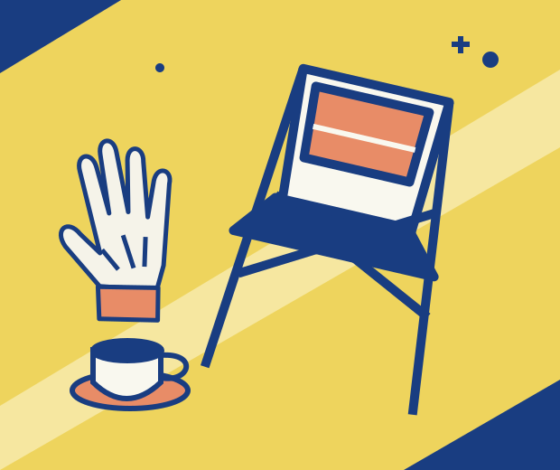

Community event · Sample
Car & bike show
Saturday, September 19 · Time to be confirmed
Robert E. Burns American Legion Post 165
In Two Rivers, the next way to serve could be right around the corner. Come meet your local American Legion.

Small acts. Shared purpose.Community event · Sample
Saturday, September 19 · Time to be confirmed
Community event · Sample
Saturday, October 3 · Time to be confirmed
There are no upcoming public events listed. You can still get to know the Post or ask about getting involved.
Talk with the Post →Veterans serving their community
The American Legion brings veterans together in service to veterans, young people, and their communities. Here’s where a conversation can begin.
Connection with people who understand military service, and a place to ask for help.
Explore the Legion’s commitment to young people, opportunity, and citizenship.
Community gatherings, shared traditions, and respect for those who have served.
You don’t have to know where to start.
Ask about membership, meet other veterans, or find out how the Post serves Two Rivers. Start with a conversation.
Ask about getting involved →Questions about the Post, an event, or getting involved?